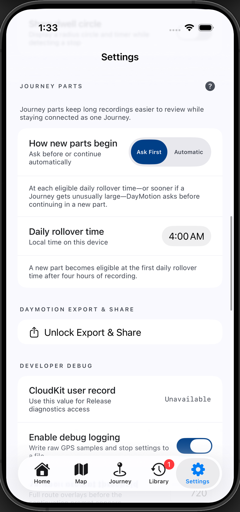
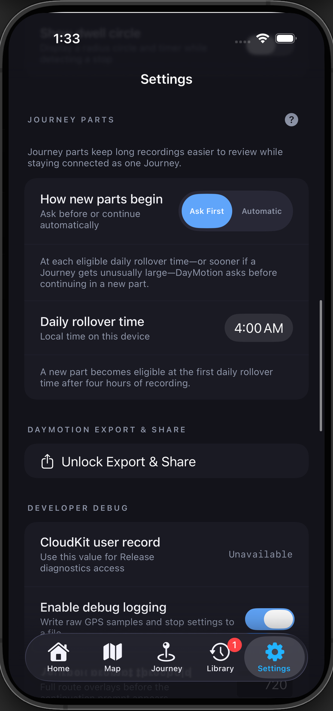
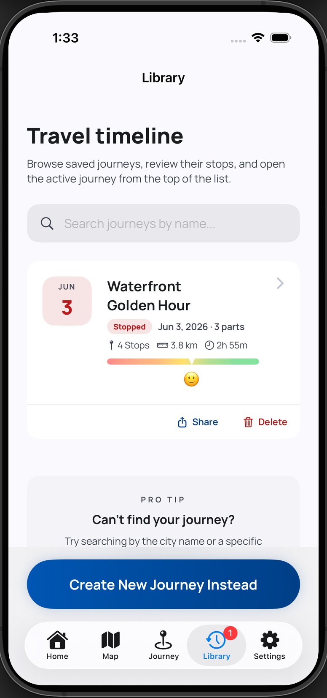
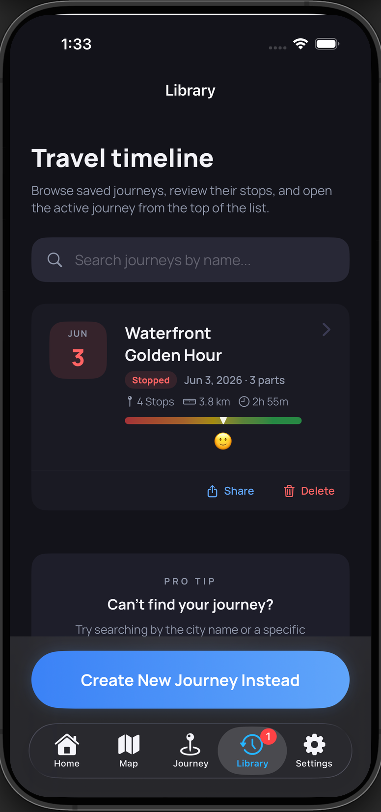
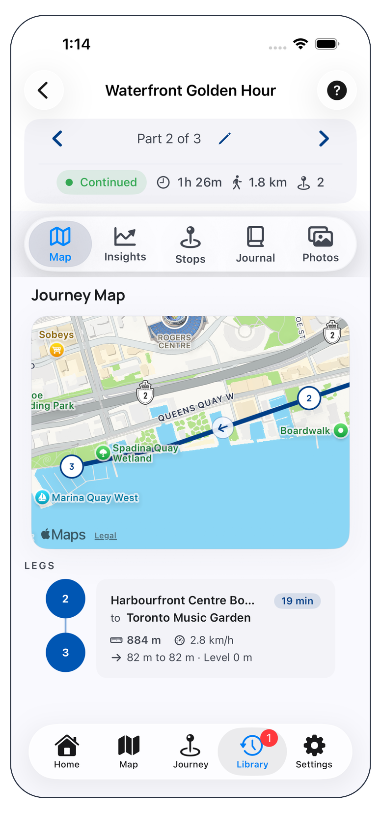
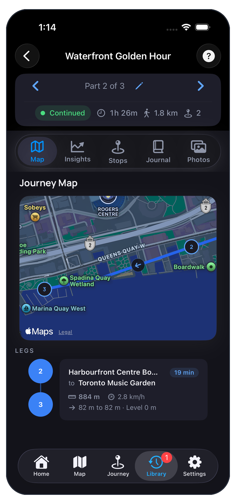

Each part belongs to the same Journey instead of becoming an unrelated trip.
Journey Parts Help
Keep long Journeys connected and easy to review.
Journey Parts are connected chapters of one Journey. DayMotion can begin a new part during a long recording without interrupting where you are going.


One Journey, Connected Parts
Parts keep a long recording manageable.
Starting a new part closes the current part and immediately continues recording in the next one.
Use the left and right arrows to move through the route, stops, journal, photos, and insights for each part.
Sharing can combine connected parts into one Journey memory.
Daily Rollover
Choose when DayMotion should ask.
A Journey becomes eligible at the first selected daily rollover time after at least four hours of recording. The setting follows local time on this device.
1Ask First
DayMotion asks at an eligible daily rollover time—or sooner if a Journey becomes unusually large. Choose Continue in New Part to move forward, or Keep Recording Here to stay in the current part until the next eligible daily rollover time.
2Automatic
DayMotion continues in a connected new part at the eligible daily rollover time without asking. A brief “Journey continued in a new part” message confirms the change. The unusually-large prompt applies to Ask First, not Automatic.
Paused Journeys
If the rollover time passes while the Journey is paused, it becomes eligible when recording resumes.
Library
Find every part under one Journey.
Library groups connected parts into one row. The row shows the number of parts and combines their stops, distance, duration, and mood summary.
3Look for the part count
“3 parts” confirms that Waterfront Golden Hour contains three connected sections rather than three separate Library entries.




Journey Detail
Move through one part at a time.
4Previous part
The left arrow selects the part recorded immediately before this one without adding another screen to Back.
5Part 2 of 3
The middle label shows your position, and the card groups the current part's metrics with it.
6Next part
The right arrow selects the following part while keeping the same Map, Insights, Stops, Journal, or Photos section open.
Start A Part Yourself
Choose a part when the Journey should continue.
When DayMotion finds a Journey that can continue, this keeps the new recording connected to it.
This ends the earlier Journey and begins an unrelated one with its own Library entry.
Questions
Common Journey Parts questions
Why was I asked before the daily rollover time?
In Ask First mode, DayMotion may offer a new part sooner when the current Journey becomes unusually large and harder to review.
What happens if the Journey is paused?
No new part begins while it remains paused. If its daily boundary has passed, DayMotion handles the eligible rollover when recording resumes.
Is a new part the same as a separate Journey?
No. A part stays connected to the earlier recording. A separate Journey gets its own Library entry and is not linked by part navigation.
Does deleting the grouped Journey delete every part?
Yes. Deleting a grouped Journey permanently removes all of its connected parts and their stops, events, photos, moods, and journal data.